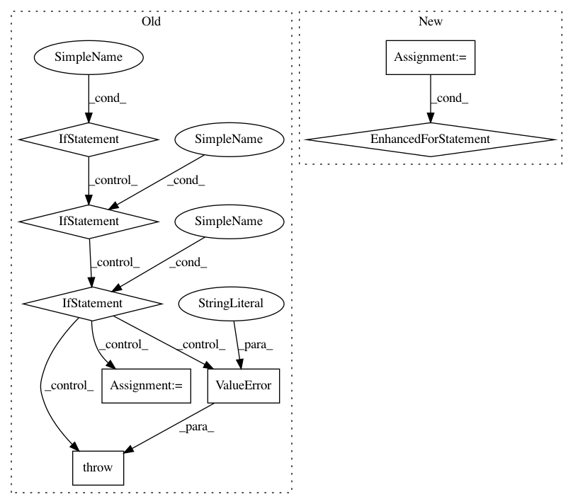

80e5340dddd58b061b3582f980fc3bc7fc4650b6,google/datalab/contrib/mlworkbench/commands/_ml.py,,_transform,#Any#Any#,645
Before Change
training_data = args["training_data"]
if isinstance(training_data, dict):
if "csv" in training_data:
cmd_args.append("--csv=" + _abs_path(training_data["csv"]))
elif "bigquery_table" in training_data:
cmd_args.extend(["--bigquery", training_data["bigquery_table"]])
elif "bigquery_sql" in training_data:
// see https://cloud.google.com/bigquery/querying-data//temporary_and_permanent_tables
print("Creating temporary table that will be deleted in 24 hours")
r = bq.Query(training_data["bigquery_sql"]).execute().result()
cmd_args.extend(["--bigquery", r.full_name])
else:
raise ValueError("Invalid training_data dict. "
"Requires either "csv", or "bigquery_talbe", or "
""bigquery_sql".")
elif isinstance(training_data, google.datalab.ml.CsvDataSet):
for file_name in training_data.input_files:
cmd_args.append("--csv=" + _abs_path(file_name))
elif isinstance(training_data, google.datalab.ml.BigQueryDataSet):
After Change
cmd_args.extend(["--project-id", google.datalab.Context.default().project_id])
training_data = get_dataset_from_arg(args["training_data"])
data_names = ("train", "eval")
for name in data_names:
cmd_args_copy = list(cmd_args)
if isinstance(getattr(training_data, name), datalab_ml.CsvDataSet):
for file_name in getattr(training_data, name).input_files:
cmd_args_copy.append("--csv=" + _abs_path(file_name))
elif isinstance(getattr(training_data, name), datalab_ml.BigQueryDataSet):
cmd_args_copy.extend(["--bigquery", getattr(training_data, name).table])
else:
raise ValueError("Unexpected training data type. Only csv or bigquery are supported.")
cmd_args_copy.extend(["--prefix", name])
try:
tmpdir = None
if args["package"]:
tmpdir = tempfile.mkdtemp()
code_path = os.path.join(tmpdir, "package")
_archive.extract_archive(args["package"], code_path)
else:
code_path = MLTOOLBOX_CODE_PATH
_shell_process.run_and_monitor(cmd_args_copy, os.getpid(), cwd=code_path)
finally:
if tmpdir:
shutil.rmtree(tmpdir)
def _train(args, cell):
if args["cloud_config"] and not args["cloud"]:
raise ValueError(""cloud_config" is provided but no "--cloud". "
"Do you want local run or cloud run?")
In pattern: SUPERPATTERN
Frequency: 4
Non-data size: 8
Instances
Project Name: googledatalab/pydatalab
Commit Name: 80e5340dddd58b061b3582f980fc3bc7fc4650b6
Time: 2017-10-13
Author: qimingj@users.noreply.github.com
File Name: google/datalab/contrib/mlworkbench/commands/_ml.py
Class Name:
Method Name: _transform
Project Name: ANTsX/ANTsPy
Commit Name: 8f22750dbdac281232241c20736018c47a7a8e26
Time: 2017-09-07
Author: ncullen.th@dartmouth.edu
File Name: ants/utils/get_ants_data.py
Class Name:
Method Name: get_ants_data
Project Name: flow-project/flow
Commit Name: eb67ae7c68aa13093cc6e3fd09b8b23581378072
Time: 2018-01-30
Author: akreidieh@gmail.com
File Name: flow/scenarios/figure8/figure8_scenario.py
Class Name: Figure8Scenario
Method Name: __init__
Project Name: Pinafore/qb
Commit Name: ed86dfa55a2750324646e08e3f7e2cee5b667319
Time: 2018-07-09
Author: ski.rodriguez@gmail.com
File Name: qanta/guesser/elmo.py
Class Name: ElmoGuesser
Method Name: train